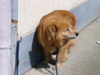
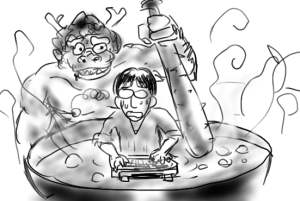
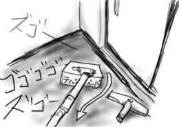
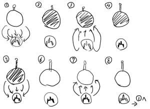
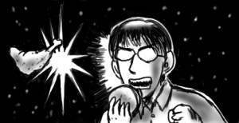
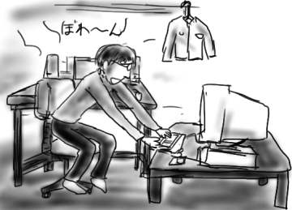
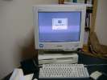
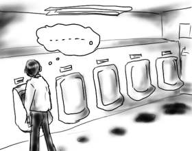

今日はなんだか料理する気が起きなかったので、帰宅後、コピペで有名な吉野家(それ以前にすでに有名です)まで出かけました。今はキャンペーン期間で250円なので。しかし、吉野家はジャージおやじ率が異様に高いですね(挨拶)。お互い目を合わせるのがタブーな空間でのサツバツとした食事は嫌いではありません。
僕は海に面した田舎生まれ田舎育ちのため、大学に入るまでファーストフードというものをほとんど食した経験がありませんでした。関東では比較的高い食材の部類に入ると思われる新鮮な魚介類を普通に食べ、逆にマクドナルドなどは県庁所在地までお出かけした時にようやく口にすることを許されるご馳走の部類でした。都心と田舎ではご馳走の逆転現象が起こっているわけですが、これはつまり、ファーストフードと自然食材のご馳走交点がどこかに存在していることを意味しています。果たしてその交点は一体どのあたりになるんでしょうか。東京と故郷のうどん国を直線で繋いでその中心を見ると、僕が大学時代を過ごした名古屋あたりになりそうなのですが、僕が大学生の頃は前述の通りすっかりファーストフード庶民生活を送っていたので、それよりももっと西になる気がします。ということは線形じゃないですよね。
そして、吉野家でぺにゃぺにゃ肉をパクついている僕の人生もどこでひっくり返ったのかなぁなど、こういう一連の流れをぼんやり考えることが、吉野家で他人と目を合わせずに食事を終わらせるコツだと僕は思います。
昨日の今日で、妙にまた寒くなり、ピカチューコップも緑色に戻ったりしています。
今日は家に帰って野菜炒めを作って食って、ネットに繋いでぼんやりしていたら、同期から電話がありました。その結果、MSN Messenger for MacOSXを試す羽目に。分かりやすく説明すると、その同期はWindowsXPを使っていて、他の同期とチャットしたいんだけど、その同期はMacOSXを使っているので、同じMacOSXを使っているお前と試すことにした、とこういうわけです。本人同士でやって下さい。と思ったけど、口にはせず(嘘、しました)、ちょっと同期とチャットなどをしてみたのですが、これがICQより快適で割といい感じでした。とは言っても、ICQ for MacOSXは日本語で入力できないので、もともと勝負になっていない気もします。発言は全てカット&ペーストでやってたし。hotmailアカウントなんてものは持っていないので、プロバイダのメールアドレスで登録してしまいました。petit 後悔。何はともあれ、MSN Messengerを使っている人は、このサイトで公開している僕のメールアドレスで検索して話し掛けてくれると喜びます。
他は特に何も書くことがないので、可愛い犬の写真でお楽しみ下さい。

仕事をしていても、なんだか身体がぼんやり重くて熱っぽいので、いくら月曜日だと言え腑抜けすぎだぞ、もしくは風邪？などと思いながらテシテシとキーボードを打っていたのですが、どうも室温が30度をマークしていた模様。このまま夏を迎えたら釜茹でですよ！

季節の変わり目は本当にあっという間で、ついこの前までは上着も必須でしたけど、もうそろそろ上着も必要なさそうです。
そういえば、2年前の夏にファーストキッチンで貰ったピカチューコップ(冷たい飲み物を注ぐと色が変わるよ！(黄→緑))を歯磨き用のコップとして使っているのですが、冬の間はかなり緑でしたが、そういえば最近はかなり黄色くなりました。そういう人工アイテムで醸し出す季節感。
おまけのような1日でしたが、洗濯したり、冬物をクリーニングに出したり、掃除機をかけたり、食料の買い出しに出かけたりしました。
掃除機のヘッドを外して、ホースから直接伝わる吸引力で戸の隙間のほこりや畳の隙間のほこりを取っていた時です。思わず手元がすべってホースの先端をティッシュ箱に突っ込んでしまいました。1枚2枚と物凄い勢いでホースに吸い込まれて行くティッシュペーパーを見ても、しばらく何が起こっているか理解できませんでした。取り返しのつかないことが起こっているのでは？というボンヤリとした意識はあったんですが。いいから、さっさと電源切れよ？

昼頃起きだして大宮へ。目当てはもちろん(以下略)。
いきなり調子良くて1コインで「田鳧(タゲリ)=ラスボス」第2段階まで到達。うわーお！(←名前が判ったので嬉しそうにさっそく使ってます)。ラスボス前で800万のエクステンドが出たのが大きかったです(200万エブリのエクステンド設定なので)。ついでだからコンティニューして噂の「解放合戦(ラスボス第3段階)」を体験してきました。ラスボスが力の解放→自機で吸収→ラスボスが属性チェンジ→吸収して得たエネルギーでこちらが力の解放→自機属性チェンジ→始めへ、というプロセスを延々と繰り返します(弾避けしながら)。心臓の鼓動のようにパッパッパッパッパッパッパッ…と延々続くのですが、これがたまらなく快感で、こりゃたまらん。思わずこみあげた(弱すぎ)！
「私達は自由を見られるかしら？」
「もうすぐ……な」

「産土神黄輝ノ塊(ウブスナガミオウキノカイ)」、別名「1分耐えまSHOW」で撃沈。まぁそんなもんです。
しかし、「浮き世(ゲーム業界)から捨てられし彼等(完全覚え系戦略シューティング)を立って、斑鳩が行く… (1面タイトルデモより一部抜粋)」というのは控えめに言って泣けすぎます(感情移入しすぎ)。
全国に１万もいるかどうかというプレイ層、かつ、このページ知ってる人という狭い範囲に向けて発信し続けることの意味について自問が始まったのでこれくらいにします。でも、一応今後も書きますよ。斑鳩をやってると生きてる気がするし(最悪)、「生きる意思を持つ者の意地に他ならない(1面タイトルデモより抜粋)」から！
「ゲーセンマインドに浸っている時はファーストフード」という最悪のスローガンでもってモスバーガーでご飯を食べたのですが、「タンドリーチキンバーガー」のうまさと来たら何事ですか。一口食べたら銀河系が見えるくらいのうまさで、毎日でも食べたい。こんなうまいものを食わせておいて期間限定なんてひどすぎます。一生分食べたいよう！

※) 今日の日記は、感情がほとばしりすぎたことをお詫びします。
実際のところ、この日記は部署の先輩も数名ほど存在を知っていて、しっかりと読まれているようなんですが、たまに反応も得られますし、バラしてまわられることもないので現状維持で更新を続けています。信頼してますしね(アピール)。先日も「僕もトイレの汚れは気になってたんだよ」と言う反応が得られたばかりです。朝はキレイなのになぁ。
今日も、その先輩が「小惑星、地球に衝突(ただし878年後)」というニュースを嬉しそうに僕に教えてくれたんですが、これはやっぱり僕が常日頃ここで世界の終わり、世界の終わりとうわ言のように呟いているので、世界の終わりを僕に教えてくれたのでしょうか。判断がつかなかったので「800年後じゃどうせ死んでるので意味ないですよ」と、どちらとも取れる返事を返しておきました。
着実にMac互換機環境が整いつつありますが、残念ながら机は１つしか所有していませんのでぼくのじまんのPowerBookG4を乗せてしまうとMac互換機を置くスペースなんかありません。ましてや17インチモニタなんてどうするの、という感じなので、役目を終えたこたつを机の横に持って来てそこに無理矢理乗せています。
役目を終えたというのは、もうすぐ春でこたつも片付ける時期ですね、という意味ではなく、今冬、このこたつは12月の時点で盛大にブッコワレてて、いくら電源を入れても暖かくならず、僕を優しく包んでくれることもしてくれなかったわけで、もう来年はないぞという意味です。
こうなると問題は机とこたつ改めテーブルの高低差であり、どうしても互換機を使う時は椅子から前屈みになって使わざるを得ないわけで、これはこれで大不便だ。使う度に何か無駄なことをしているのではないかと我に返ってしまう、そういう自分を甘やかさないレイアウト。お勧めできない。

明け方近くまで夜更かししてStars of the Lidの「the third sound of」を聴いてると生きてるのがどうでもよくなって来ます。しかし、「Requiem for Dying Mothers」とか「Austin Texas Mental Hospital」とか「Ballad of Distances」とか曲名がいちいちアレすぎて、もうダメだ。そして最後に「Love Song」で締めるなんて。そんで最後の曲の調子もそれまでと全く一緒なんて。ラブと死はどうせ一緒だなんて。CD2枚通してドローンな曲が延々と続きます。声も入らず延々ぼわ〜んと。もう、ダメだ。実を言うと買ったの去年の暮れなんですけど(今まで聴いてなかったのかよ)。でも、これは暖かくなって来てからの方が絶対キます。夏、夜が白み始めて新聞配達のカブが外を走りはじめる時間なんかに聴いたら絶対泣くと思われます。それまで封印。
最近、学生時代に使っていたMac互換機を復活させました。とっくに立ち上がらなくなっていたのですが、HDDが死んでいただけのようで、HDDを入れ替えたら実に簡単に起動するようになりました。これでレガシーな入出力はこいつにまかせられるぞと、もう使わなくなった古いソフトなんかを毎日少しずつインストールしています。地味な趣味です。ライン入力もついているので、ようやくnanoloopの曲も取り込めたりするはず。しかし、さすが5年前に一世風靡すらしなかった互換機、MacOS8.6なんて3年前のOSでも満足にデバイスをドライブしてくれません。CDROMは入れても読み込まない、PCI Network Card(10BASE-T)も挙動がおかしく、対100BASE-Tでろくな転送速度が出ない、など苦労が絶えません。たかだか50Mバイト程度のファイルをAppleTalk経由でコピーしようとしただけで「残り時間3時間」と出た時は絶望しかけました。あと内臓電池も切れてます。なんとなく気まぐれではじめた復活劇ですが、そろそろ意地です。

昨日の日記のトイレの謎ですが、西原さんから「こんな謎じゃ探偵学園の入試にもなりませんな」というICQメッセージが飛んで来ました。QクラスどころかAクラスでも楽勝だそうです。しかして、その答えとは！"こぼすやつは、たまりまくって急いで用を足すため入り口の近くに！そしてこぼす！(原文ママ)"。うわーい簡単だ。というかそれじゃなんでグラデーションになるのか説明になってませんよ！！
おしっこ客到着率λがポアソン分布、単位時間で用を足す率μが指数分布しているとして、必ずみんな溜まりまくって入り口最寄りの便器を目指すモデルで無理やりM/M/1と考えると、待ち行列の平均長が1.6(イヤな汚れのグラデーションの真ん中)くらいにならないかなぁと思ったんですが、これ間違ってますかね。きっと間違ってるな(本当は待ってる間も用が足せるので)。考えるとコンガラガッテきたので誰か僕に神の啓示を与えて下さい。
もうこんな時間(AM3:45)だよ！どうなってんのもう！
何の変哲もなく、社会人として4年目としての生活がスタート！ということで、気分も新たにディスクマンにはほぼ1年遅れで(いきなり矛盾)ミッシェル・ガン・エレファントの「ロデオ・タンデム・ビート・スペクター」をセットし、リストカット女子や終わった世界の妄想が男前に歌い上げられるのを聴いて「あーもうホント世界が終わってしまえばなぁ。浜辺にたくさん打ち上げられた屍骸にカモメがたかって、その鳴き声と波の音だけ聞こえてて。人間が一瞬にして死に絶えた朝は、やけに空気が澄んでて何かが分かった気分になるんだ。」などと考えながらフラフラヨタヨタと出社します(最悪)。
そんな妄想が許されるくらい、国道16号線沿いを歩いて通勤するのはキッツイ&Deathです。いつから地上は車の物になったんでしょうか。
そんなわけで、うえさんの「身代わりプログラム」の4/1分の日記を読んで、春を迎えるにあたっての行動原理が全く同じことに驚きを隠しきれません。文中リンクごめんなさい。
会社の男子トイレなんですが(イキナリ)、小便器が入り口から奥に向かって５つ程並んでいるのですが、毎日掃除が入っているにも関わらず、なぜかどの小便器の下もベトベトといやぁな汚れ方をしており、入り口側から奥側へ向かって徐々に汚れが薄くなって行く、言うならば「イヤな汚れのグラデーション」を形成しています。僕は元来ものぐさなので、基本的に入り口最寄りの小便器が指定席なのですが、ここ最近、このグラデーションのせいで奥で用を足すことを強いられています。一番奥だとほとんど被害がないので。用を足した後、靴がネバついてビタビタと音を立てるのは気持ちのいいものではない、というか明確に気持ち悪いです。
しかし、一体誰が何のために？早急に謎が解決されることを祈ります。いや、謎と言うか、僕の快適な排泄のために原因を取り除いて欲しい。でも、ものぐさだから、僕は謎を究明したりしないのだなぁ(オチ)。

仕事が忙しいから謎解きにかまけている暇はないとした方がまだ収まりがいいのではないかと、書いた後で気が付きました。うっかりだ。
4月バカ！(藤子・F・不二雄表記)
なんだか突拍子もない愉快な嘘でもってみんなの心を和ませようと思ったんですが何も思い付きませんでした。相変わらずアドリブは弱いです。う〜ん、魚の骨が咽に刺さったよう(へぼ)。
今日は部署で送別会でした。前回の飲みでは無邪気な顔で毒を吐くというキャラを確立した(02/03/20日記参照)わけですけど、今回はさらにそれを押し進めて「無邪気な顔も計算づく」というキャラへ。僕はどこへ行こうとしているんでしょうか。まだギリギリ帰って来れるでしょうか。
まぁ実際のところ、部署の席から離れて同じ居酒屋にいた同期のところで時間を潰してたりしてたんですけどね。送別しろ。部署の席では某ちゃんねるの「ムネオハウス」ムーヴメントを解説していたような気がしますけど、気のせいでしょうか。これはギリギリ帰って来られないかなぁ。
そんなわけで入社4年目を迎え、そろそろボロが出始めた僕ですけど、4月バカということで全てを嘘にしたいなぁ。人間て簡単に偽れないなぁ。